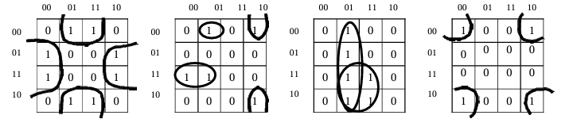
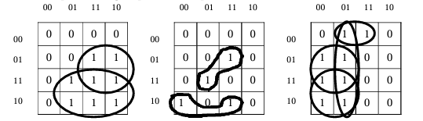

IV. Applications
Equation Simplification

F1 = /abc + c/b/a + /bc/a + /c/ab
F2 = ab + /ba
F3 = /d/cba + /dcb/a + /dc/ba + /d/cba
F4 = dca + /bc/a + /ca
Examples of possible groupings:
Examples of impossible or redundant groupings:
Summary of the method:
F1 = /abc + c/b/a + /bc/a + /c/ab
F2 = ab + /ba
F3 = /d/cba + /dcb/a + /dc/ba + /d/cba
F4 = dca + /bc/a + /ca